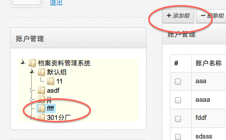
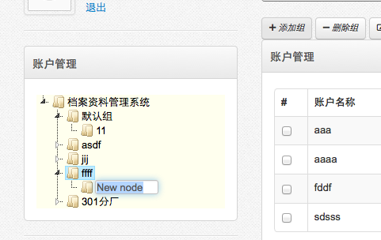
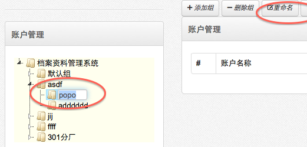

-
- 操作流程
- 点击首页功能菜单［系统维护－帐户管理］，打开帐户管理。
- 帐户组是帐户的集合。也可以把帐户组作为企业的组织机构来管理。
- 帐户组包括添加、删除、重命名、移动组功能。
- 添加组
-
- 要添加一个新组，首先要选择已存在的组作为上级，点击［添加组］按钮，自动在选择的上级组下建立一个新组，可以更改组的名称。
-

-

- 删除组
- 要删除一个组，首先要选择一个组，点击［删除组］按钮，确认删除。
- 删除一个帐户组，将删除该组下包含的组。该组包含的帐户将不删除，帐户将属于默认组。
- 默认组是不能删除的。
- 重命名
- 要重命名一个组，首先要选择一个组，点击［重命名］按钮，直接修改帐户组的名称。
-

- 重命名组名称，不对其他有影响。